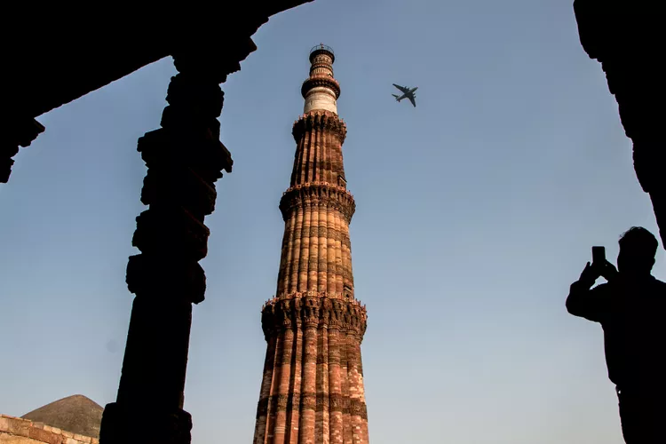

Qutub Minar
 |
ADDRESS :
Seth Sarai,
Mehrauli,
New Delhi,
Delhi 110016
VIEW MAP
Number of Visitors in 2021-22: 2,979,939.
Revenue Generated in 2021-22: 266,289,800 rupees ($3.78 million).
|
Agra Fort
|
ADDRESS :
Agra Fort,
Rakabganj,
Agra,
Uttar Pradesh 282003
VIEW MAP
Number of Visitors in 2021-22: 2,511,263.
Revenue Generated in 2021-22: 305,597,470 rupees ($4.33 million).
|
One of Delhi's top attractions, Qutab Minar is the tallest brick minaret in the world and is an incredible example of early Indo–Islamic architecture. It's widely believed that it dates back to the 13th century, when Qutab-Ud-Din-Aibak (founder of the Delhi Sultanate) is said to have started constructing it. However, a great deal of controversy surrounds its origin and purpose. It may in fact have originally been a Hindu tower. The tower has five distinct stories and a height of 72.5 meters (238 feet). Several other historic monuments are on the site as well. Unfortunately, there's been a steady decline in footfall over the last three years.
|
Agra Fort, while undoubtedly overshadowed by the Taj Mahal, is one of the finest Mughal forts in India (it's more impressive than Delhi's Red Fort). The fort was originally a brick fort that was held by a clan of Rajputs. However, it was subsequently captured by the Mughals and rebuilt by Emperor Akbar, who decided to shift his capital there in 1558. There are many buildings to see inside the fort, including mosques, public and private audience halls, palaces, towers, and courtyards. Another attraction is the evening sound and light show that recreates the fort's history. Ideally, it should be visited before the Taj Mahal, as it's an evocative prequel to the monument.
|